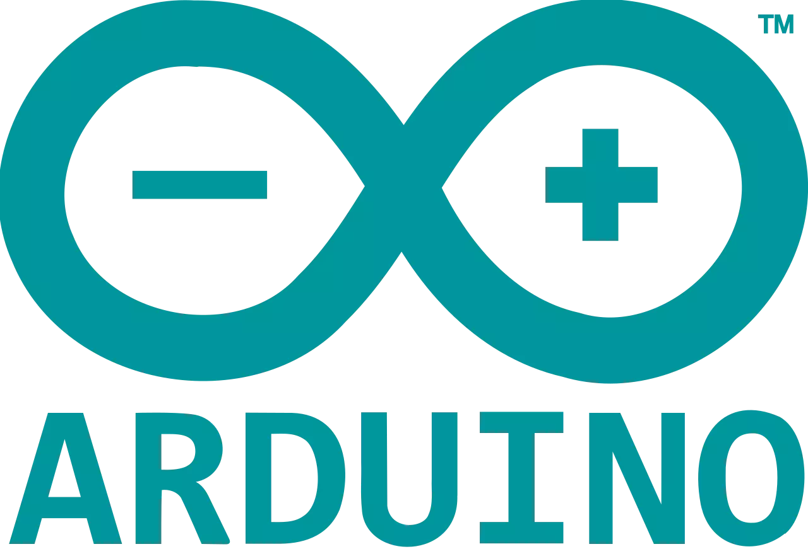
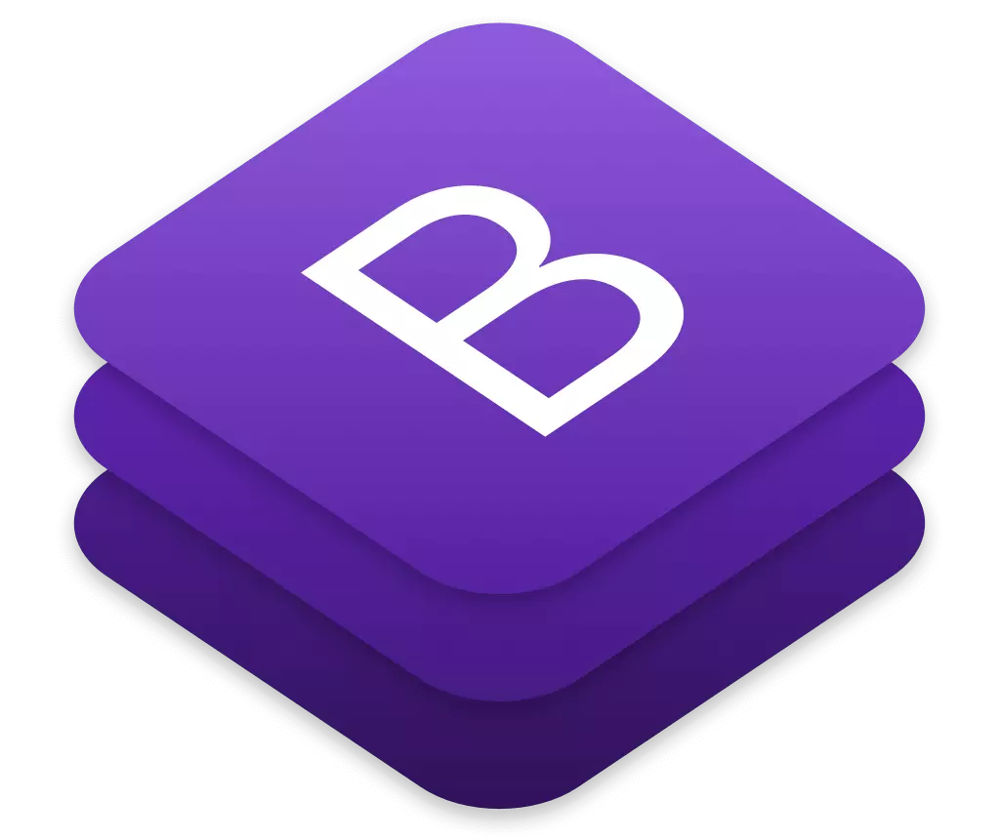

Hello, I'm Allen, passionate about learning and implementing what I have learnt. I’m proactive, productive, persistent and more importantly, a perfectionist. Currently a third year Electronics student acquiring skills in cloud architecture and data science.
Vellore Institute of Technology
Bachelor of Technology - Electronics and Communication
with specialization in IoT and Sensors
2018 - present
Delhi Public School, Bangalore East
12th Grade (CBSE) - PCMC
2016 - 2018
Baldwin Boys' High School
10th Grade (ICSE) - Science
2012 - 2016
26
GCP QUESTS16
FUTURESKILLS BADGES6
LINKEDIN BADGES31
COURSERA CERTIFICATESArduino based project developed as an initiative to reduce the usage of touch surfaces amid COVID scare. The project relies on object proximity detection using HC05 ultrasonic sensor, the output of which, the system uses to control the door movements and alert system. The data received is stored on a cloud server via ESP8266
A detailed elaboration of how Canny Edge Detection of openCV library works. The project contains four sections - basic image processing operations applied on a sample image, the inner workings of canny edge detection, openCV function on live camera feed and its application on a video with tweaker parameters
The project relies on the usage of NLTK for the analysis of articles based on a set of pre-determined parameters for checking the quality of the piece. URL links of the articles are given as input to the program which will then scrape, tokenize and pass through all conditions to evaluate and rank the different writers
Making use of chatterbot library by python to make a chatbot which will not only interact naturally with the user, but also helps to trade stocks via yahoo finance. The chatbot receives the data through web scraping, historical data through a cloud data server and can execute the functions according to the input the user gives
Verilog HDL can be explained as a low level programming language used for hardware-software integrations. Here in this project, we take an altera DE-115 and program it to simulate a digital lock. The software is developed purely using codes of logical and bitwise operations with a manual clock frequency
Tries, also called as a digital tree or a prefix tree, is a data structure, used here for prediction of words while typing a sentence. This project takes it an extra step ahead by allocating a spot for it's own dictionary and autocorrecting the input words according to its contents which ensures higher accuracy and flexibility
{kind=link}